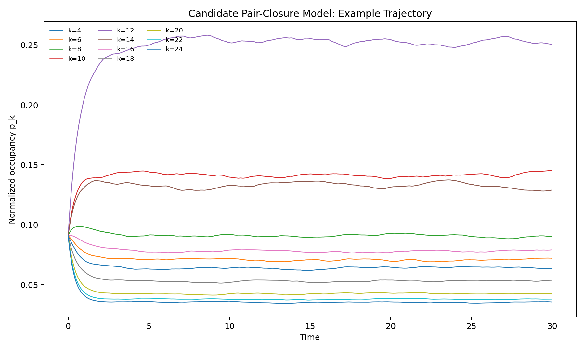
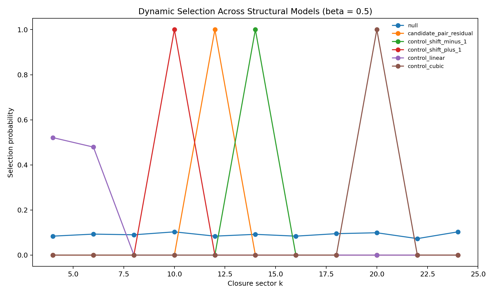
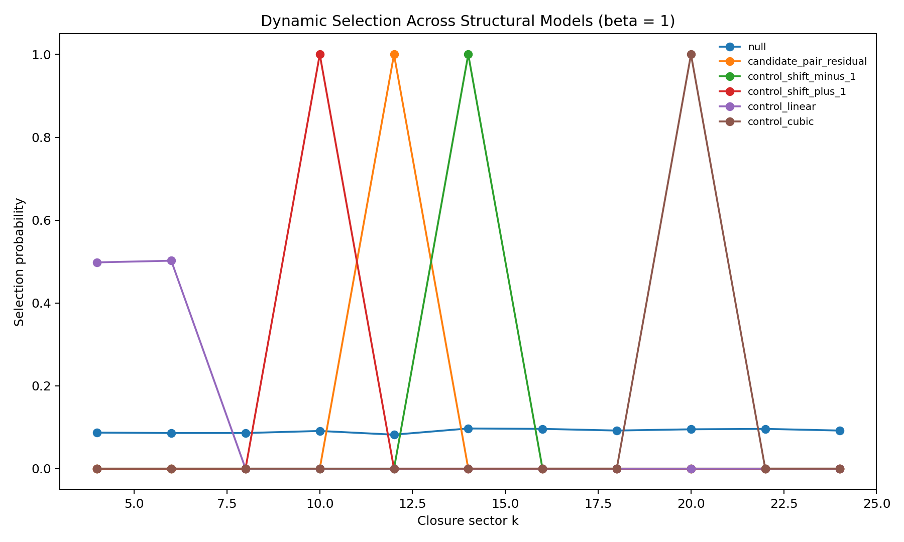
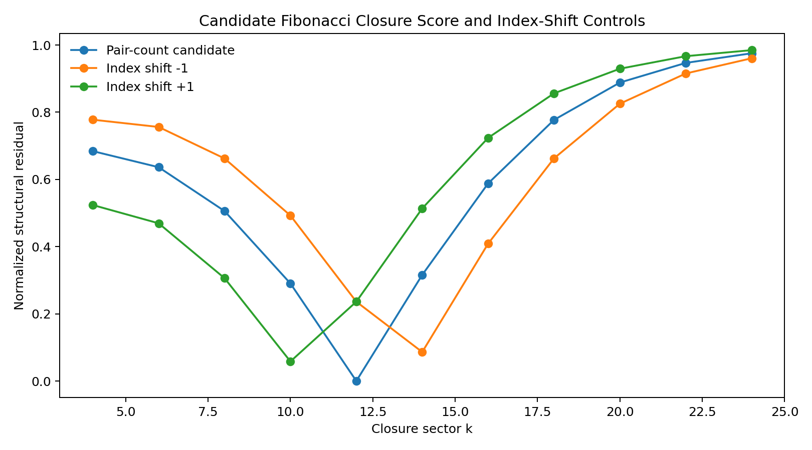

Entry 02
Candidate Fibonacci Pair-Closure Functional — Vectorized Edition
Scientific status This notebook tests an explicit candidate closure rule. It does NOT claim that this rule has already been uniquely derived from EDF.
entry_02
Outputs folder: output
Figures
Click any figure to enlarge it.

candidate_example_trajectory.png
{kind=link}

selection_comparison_beta_0.5.png
{kind=link}

selection_comparison_beta_1.png
{kind=link}
selection_comparison_beta_2.png
{kind=link}
selection_comparison_beta_4.png
{kind=link}

structural_residuals.png
{kind=link}
Tables
Embedded previews of CSV/TSV outputs with links to the full raw files.
| time | closure_entropy |
|---|---|
| 0.0 | 2.3978952727983707 |
| 0.05 | 2.396381744959014 |
| 0.1 | 2.392449068701698 |
| 0.15000000000000002 | 2.3868410379386833 |
| 0.2 | 2.3800856460250404 |
| 0.25 | 2.3725624640607355 |
Preview only — rows truncated. Open full file
| time | k_4 | k_6 | k_8 | k_10 | k_12 | k_14 | k_16 | … |
|---|---|---|---|---|---|---|---|---|
| 0.0 | 0.09090909090909091 | 0.09090909090909091 | 0.09090909090909091 | 0.09090909090909091 | 0.09090909090909091 | 0.09090909090909091 | 0.09090909090909091 | … |
| 0.05 | 0.0894644793243338 | 0.09028191934215103 | 0.09243883528544074 | 0.09612974199097635 | 0.10153826082021725 | 0.09569878121376138 | 0.09110280968655841 | … |
| 0.1 | 0.08802367203804443 | 0.08953160946817885 | 0.09376159112595474 | 0.10080570514569852 | 0.11139703222928096 | 0.0999794696333497 | 0.09115453059209802 | … |
| 0.15000000000000002 | 0.08657338187669651 | 0.08880654725106486 | 0.09486150111624587 | 0.10508280717909402 | 0.12047358116684279 | 0.10375339423271689 | 0.09112276153957191 | … |
| 0.2 | 0.08519606723579608 | 0.08804517542200017 | 0.09580552034583846 | 0.10896222503891194 | 0.12891141409347817 | 0.1070469060969412 | 0.09103655956286437 | … |
| 0.25 | 0.0838792640627706 | 0.08725003532422734 | 0.09655245562420545 | 0.11246473772540733 | 0.13680056481283054 | 0.11001482641895188 | 0.09086316859599695 | … |
Preview only — columns truncated, rows truncated. Open full file
| beta | detected_structural_sector | null_selection_probability | candidate_selection_probability | selection_gain |
|---|---|---|---|---|
| 0.5 | 12 | 0.084 | 1.0 | 11.904761904761903 |
| 1.0 | 12 | 0.082 | 1.0 | 12.195121951219512 |
| 2.0 | 12 | 0.092 | 1.0 | 10.869565217391305 |
| 4.0 | 12 | 0.089 | 1.0 | 11.235955056179776 |
Preview only. Open full file
| model | beta | k | selection_count | selection_probability | mean_residence | mean_final_occupancy |
|---|---|---|---|---|---|---|
| null | 0.5 | 4 | 84 | 0.084 | 2.7265511122896724 | 0.0908543558204586 |
| null | 0.5 | 6 | 93 | 0.093 | 2.7275903893860134 | 0.09096335839405871 |
| null | 0.5 | 8 | 90 | 0.09 | 2.727340668407751 | 0.09096969998226206 |
| null | 0.5 | 10 | 103 | 0.103 | 2.726808338139439 | 0.09089155763537506 |
| null | 0.5 | 12 | 84 | 0.084 | 2.7283031652505034 | 0.09102946316731587 |
| null | 0.5 | 14 | 92 | 0.092 | 2.727513999527878 | 0.09086507086261358 |
Preview only — rows truncated. Open full file
| model | beta | dynamic_winner_k | winner_selection_probability |
|---|---|---|---|
| null | 0.5 | 10 | 0.103 |
| candidate_pair_residual | 0.5 | 12 | 1.0 |
| control_shift_minus_1 | 0.5 | 14 | 1.0 |
| control_shift_plus_1 | 0.5 | 10 | 1.0 |
| control_linear | 0.5 | 4 | 0.521 |
| control_cubic | 0.5 | 20 | 1.0 |
Preview only — rows truncated. Open full file
| k | F_k | pair_count_k2 | candidate_pair_residual | control_shift_minus_1 | control_shift_plus_1 | control_linear | control_cubic | … |
|---|---|---|---|---|---|---|---|---|
| 4 | 3 | 16 | 0.6842105263157895 | 0.7777777777777778 | 0.5238095238095238 | 0.14285714285714285 | 0.9104477611940298 | … |
| 6 | 8 | 36 | 0.6363636363636364 | 0.7560975609756098 | 0.46938775510204084 | 0.14285714285714285 | 0.9285714285714286 | … |
| 8 | 21 | 64 | 0.5058823529411764 | 0.6623376623376623 | 0.30612244897959184 | 0.4482758620689655 | 0.9212007504690432 | … |
| 10 | 55 | 100 | 0.2903225806451613 | 0.4925373134328358 | 0.0582010582010582 | 0.6923076923076923 | 0.8957345971563981 | … |
| 12 | 144 | 144 | 0.0 | 0.23605150214592274 | 0.23607427055702918 | 0.8461538461538461 | 0.8461538461538461 | … |
| 14 | 377 | 196 | 0.3158813263525305 | 0.08624708624708624 | 0.5136476426799007 | 0.928388746803069 | 0.7584107657801986 | … |
Preview only — columns truncated, rows truncated. Open full file
Source files
Theoretical notes
No files in this category.
Data files
No files in this category.
Other artifacts
No files in this category.